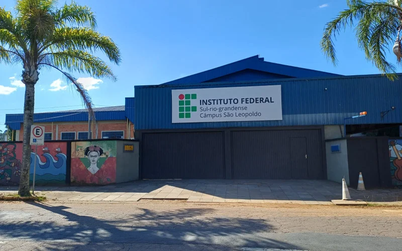
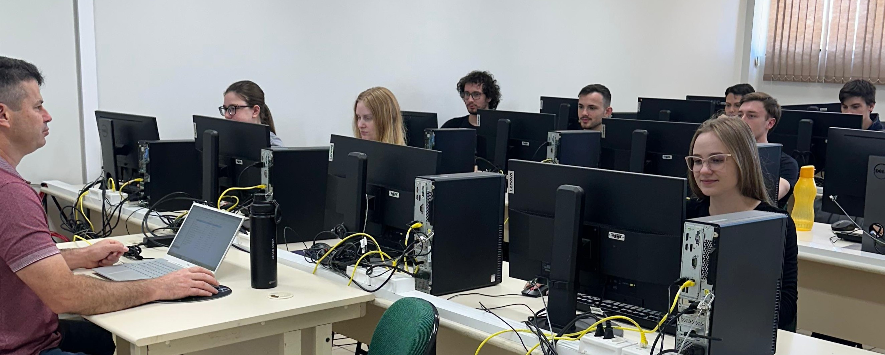

Conheça os cursos do eixo Informação e Comunicação do IFSul câmpus São Leopoldo e prepare-se para o futuro.
Oferecemos curso técnico subsequente com foco em empregabilidade e excelência profissional.

O curso Técnico em Desenvolvimento de Sistemas forma profissionais capazes de desenvolver, projetar e implementar sistemas computacionais para diversas plataformas. O estudante aprende do básico ao avançado em linguagens de programação, banco de dados e engenharia de software.